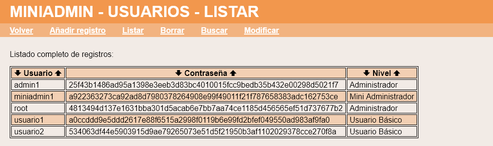
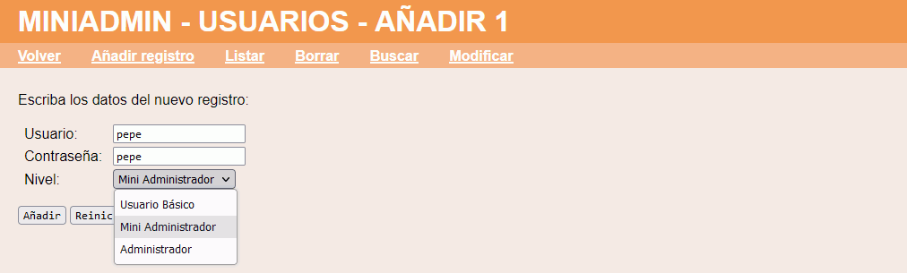
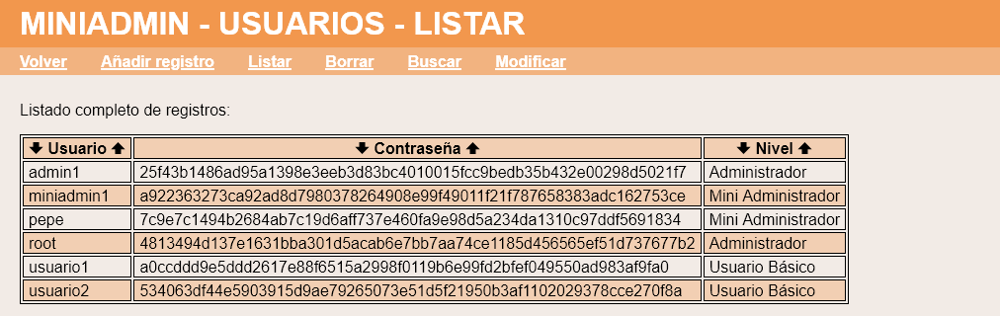
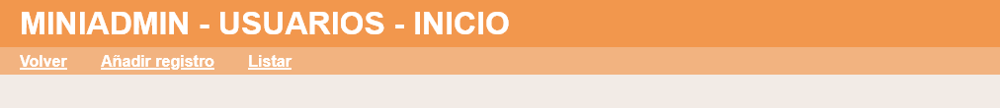
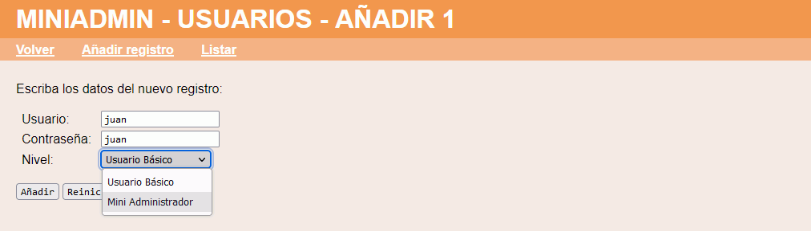
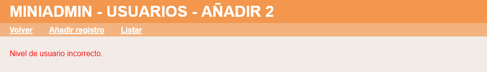
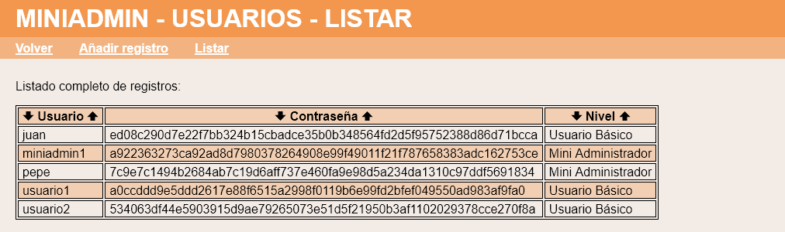

En este ejercicio se debe ampliar la aplicación proporcionada en la plantilla de manera que haya un nuevo nivel de usuario llamado Miniadministrador, con las mismas capacidades de un usuario básico y que además pueda crear usuarios y listarlos. La aplicación debe funcionar tanto en SQLite como en MySQL. Haga una captura de la pantalla en MySQL en la que se vea la base de datos de la aplicación y el contenido de la tabla de usuarios.
Crear usuario de prueba MiniAdministrador

Crear usuario MiniAdministrador


Menús para Mini Administradores


Este apartado se puntuará con la puntuación máxima si la solución es una solución general, que funcione automáticamente con otros posibles niveles de usuarios.

Este apartado se puntuará con la puntuación máxima si la solución es una solución general, que funcione automáticamente con otros posibles niveles de usuarios.

Este apartado se puntuará con la puntuación máxima si la solución es una solución general, que funcione automáticamente con otros posibles niveles de usuarios.